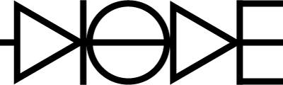

Introduction
Diode was born out of the need of having something similar to Redux or Om for Scala applications. It's a very simple but powerful library with three basic tenets:
- Model is your state, keep no other state
- Thou shall not directly modify the state
- State is always replaced with the next state
If you are interested in the motivation, or prior art for Diode, we recommend reading through Redux introduction and Flux architecture. Both give a great overview on the benefits of unidirectional data flow and immutable state.
To use Diode in your application add following dependency declaration to your Scala project.
"io.suzaku" %% "diode" % "1.1.5"In a Scala.js project the dependency looks like this.
"io.suzaku" %%% "diode" % "1.1.5"Diode Architecture
The building blocks and data flow of a Diode application are shown in the diagram below.

The Model represents the full state of your application. You should be able to serialize the model, restart the application, deserialize the model and you would end up in the exact same state where you started. Typically the model is constructed as a hierarchy of case classes, but it can be anything that resembles a directed graph.
To make a change in the Model you need to create and dispatch an Action. An action is an immutable data object containing information on how the state should be changed.
All actions are processed by a single Circuit, containing handlers for different action types. The responsibility of an action handler is to calculate a new
model based on the previous model and the action. It can be represented as a function (model, action) => model. In addition to the updated model, the handler
may also return one or more async Effects.
These Effects are meant for performing side effects such as loading data from the server. When an effect completes, it must return a new action to be dispatched. This ensures that all changes to the model happen synchronously inside the Circuit.
The circuit notifies registered Views about all changes to the application model. Views may then read from the model any data they need for rendering. User interaction creates new Actions that go through the now familiar processing loop.